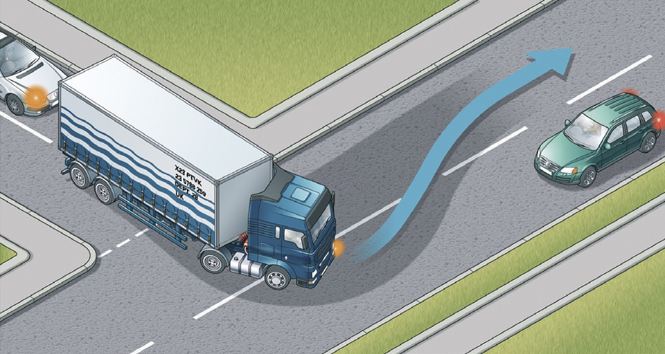

Road users requiring extra care (204 to 225)
5. Other vehicles (219 to 225)
219
Emergency and Incident Support vehicles. You should look and listen for ambulances, fire engines, police, doctors or other emergency vehicles using flashing blue, red or green lights and sirens or flashing headlights, or Highways Agency Traffic Officer and Incident Support vehicles using flashing amber lights. When one approaches do not panic. Consider the route of such a vehicle and take appropriate action to let it pass, while complying with all traffic signs. If necessary, pull to the side of the road and stop, but try to avoid stopping before the brow of a hill, a bend or narrow section of road. Do not endanger yourself, other road users or pedestrians and avoid mounting the kerb. Do not brake harshly on approach to a junction or roundabout, as a following vehicle may not have the same view as you.
220
Powered vehicles used by disabled people. These small vehicles travel at a maximum speed of 8 mph (12 km/h). On a dual carriageway where the speed limit exceeds 50 mph (80 km/h) they MUST have a flashing amber beacon, but on other roads you may not have that advance warning (see Rules 36 to 46 inclusive).
Law RVLR reg 17(1) & 26
221
Large vehicles. These may need extra road space to turn or to deal with a hazard that you are not able to see. If you are following a large vehicle, such as a bus or articulated lorry, be aware that the driver may not be able to see you in the mirrors. Be prepared to stop and wait if it needs room or time to turn.
Emergency and Incident Support vehicles. You should look and listen for ambulances, fire engines, police, doctors or other emergency vehicles using flashing blue, red or green lights and sirens or flashing headlights, or Highways Agency Traffic Officer and Incident Support vehicles using flashing amber lights. When one approaches do not panic. Consider the route of such a vehicle and take appropriate action to let it pass, while complying with all traffic signs. If necessary, pull to the side of the road and stop, but try to avoid stopping before the brow of a hill, a bend or narrow section of road. Do not endanger yourself, other road users or pedestrians and avoid mounting the kerb. Do not brake harshly on approach to a junction or roundabout, as a following vehicle may not have the same view as you.
220
Powered vehicles used by disabled people. These small vehicles travel at a maximum speed of 8 mph (12 km/h). On a dual carriageway where the speed limit exceeds 50 mph (80 km/h) they MUST have a flashing amber beacon, but on other roads you may not have that advance warning (see Rules 36 to 46 inclusive).
Law RVLR reg 17(1) & 26
221
Large vehicles. These may need extra road space to turn or to deal with a hazard that you are not able to see. If you are following a large vehicle, such as a bus or articulated lorry, be aware that the driver may not be able to see you in the mirrors. Be prepared to stop and wait if it needs room or time to turn.

Rule 221: Large vehicles need extra room
222
Large vehicles can block your view. Your ability to see and to plan ahead will be improved if you pull back to increase your separation distance. Be patient, as larger vehicles are subject to lower speed limits than cars and motorcycles. Many large vehicles may be fitted with speed limiting devices which will restrict speed to 56 mph (90 km/h) even on a motorway.
223
Buses, coaches and trams. Give priority to these vehicles when you can do so safely, especially when they signal to pull away from stops. Look out for people getting off a bus or tram and crossing the road.
224
Electric vehicles. Be careful of electric vehicles such as milk floats and trams. Trams move quickly but silently and cannot steer to avoid you.
225
Vehicles with flashing amber beacons. These warn of a slow-moving or stationary vehicle (such as a Traffic Officer vehicle, salt spreader, snow plough or recovery vehicle) or abnormal loads, so approach with caution. On unrestricted dual carriageways, motor vehicles first used on or after 1 January 1947 with a maximum speed of 25 mph (40 km/h) or less (such as tractors) MUST use a flashing amber beacon (also see Rule 220 above). Law RVLR 1989, reg 17
Large vehicles can block your view. Your ability to see and to plan ahead will be improved if you pull back to increase your separation distance. Be patient, as larger vehicles are subject to lower speed limits than cars and motorcycles. Many large vehicles may be fitted with speed limiting devices which will restrict speed to 56 mph (90 km/h) even on a motorway.
223
Buses, coaches and trams. Give priority to these vehicles when you can do so safely, especially when they signal to pull away from stops. Look out for people getting off a bus or tram and crossing the road.
224
Electric vehicles. Be careful of electric vehicles such as milk floats and trams. Trams move quickly but silently and cannot steer to avoid you.
225
Vehicles with flashing amber beacons. These warn of a slow-moving or stationary vehicle (such as a Traffic Officer vehicle, salt spreader, snow plough or recovery vehicle) or abnormal loads, so approach with caution. On unrestricted dual carriageways, motor vehicles first used on or after 1 January 1947 with a maximum speed of 25 mph (40 km/h) or less (such as tractors) MUST use a flashing amber beacon (also see Rule 220 above). Law RVLR 1989, reg 17